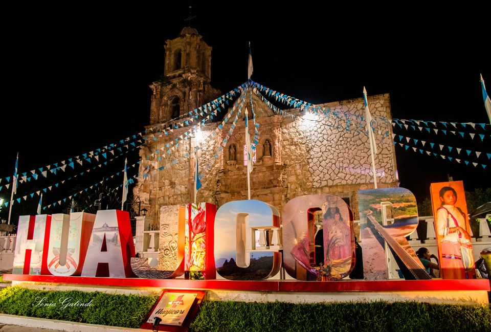
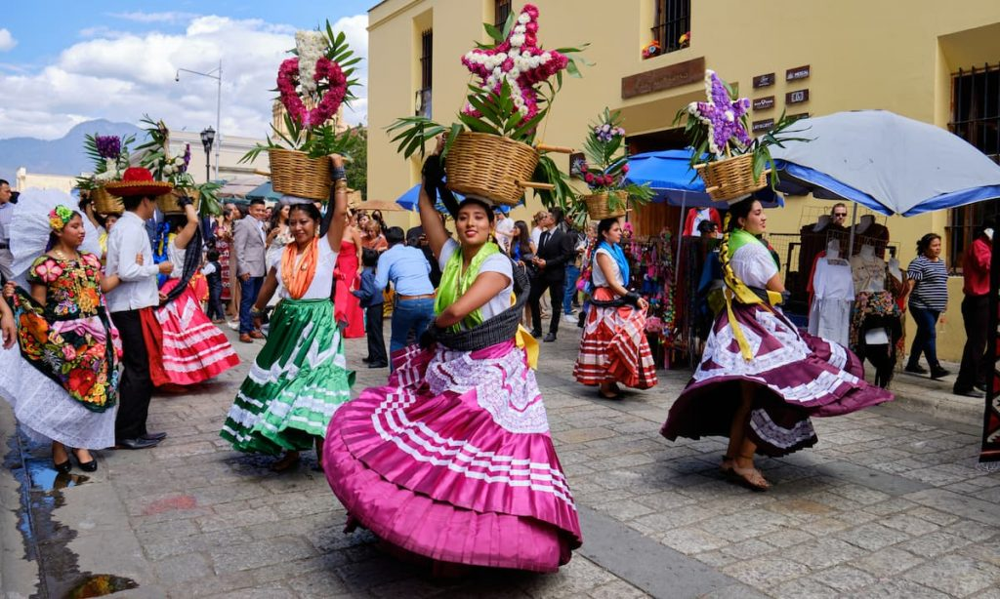
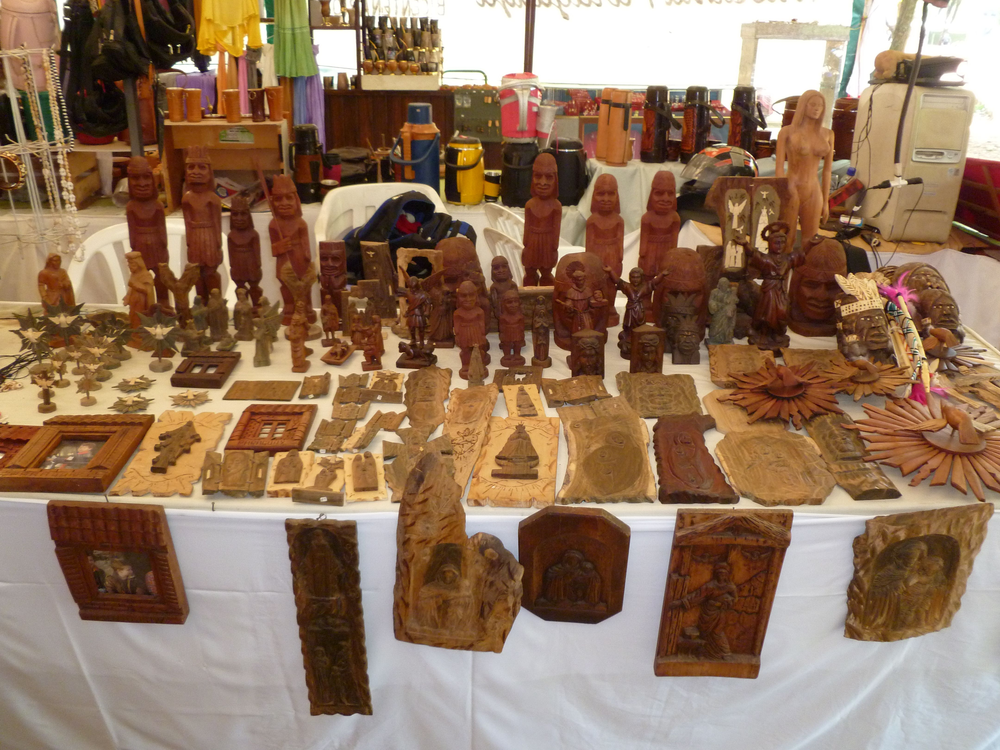

Huajicori se localiza al norte del estado de Nayarit, México. Limita al norte con el estado de Durango, al oeste con el municipio de Acaponeta y al sur con el municipio de El Nayar. Es una zona montañosa con ríos y paisajes naturales.
Las principales fiestas en Huajicori se celebran en honor a San Francisco de Asís, el 4 de octubre. Durante esta fiesta hay danzas tradicionales, música, procesiones religiosas y eventos culturales. También se celebran otras fiestas patronales en las comunidades indígenas cercanas.
Huajicori es un municipio agrícola y ganadero. Se cultivan productos como maíz, frijol, café y plátano. También es conocida por la producción de artesanías indígenas, como textiles y trabajos en madera, elaborados por las comunidades coras.
